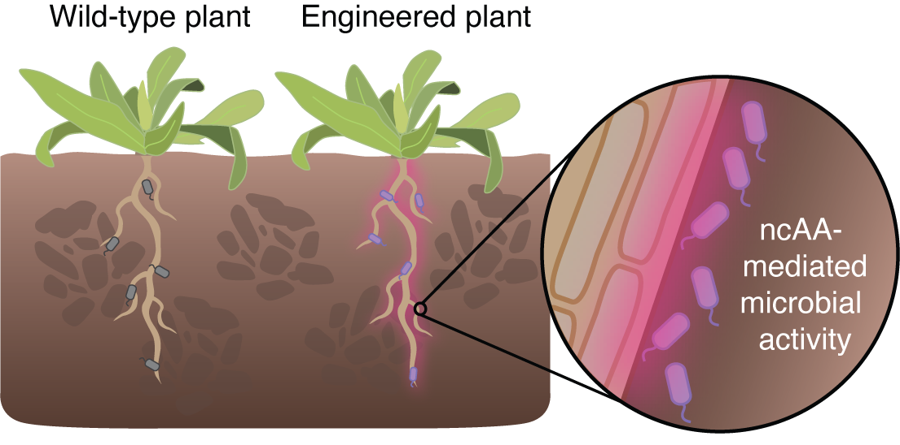
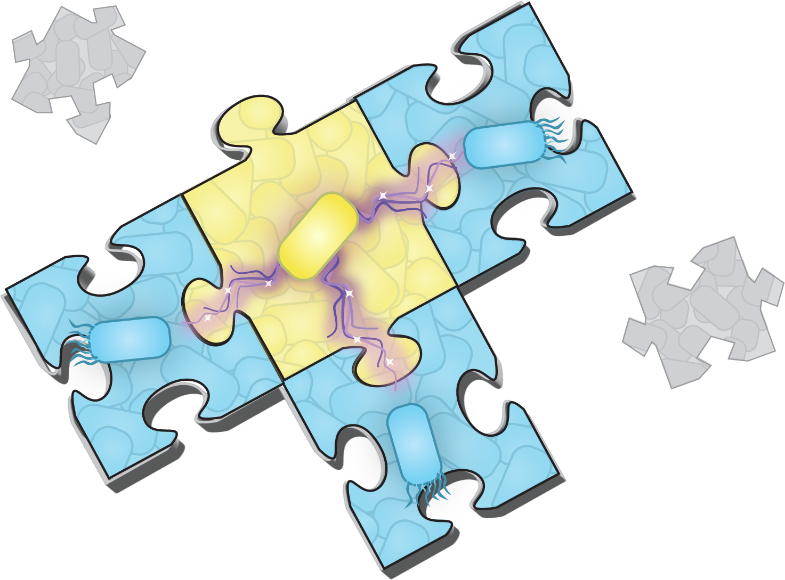
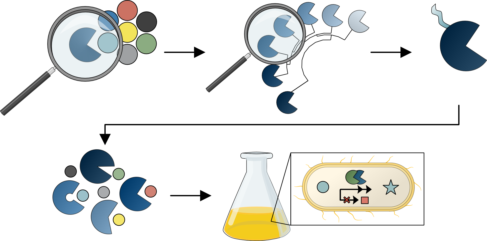

2026
Genetic code expansion enables plant-directed control of bacterial activity
Zhong V*, Jones MA*, Cabales A, Gevorgyan A, Incekmann R, Johnson AA, Karunadasa SS, Forti AM, Xu SL, Kunjapur AM, Brophy JAN. (*Co-first author)

Zhong V*, Jones MA*, Cabales A, Gevorgyan A, Incekmann R, Johnson AA, Karunadasa SS, Forti AM, Xu SL, Kunjapur AM, Brophy JAN. (*Co-first author)

Anderson SR, Gupta S, Butler ND, Jones MA, Kunjapur AM.
Anderson SR, Spangler A, Jones MA, Dickey RM, Kunjapur AM.
Forti AM, Jones MA, Butler ND, Kunjapur AM.

Anderson SR, Gopal MR, Spangler AP, Jones MA, Wyllis D, Kunjapur AM.
Dickey RM, Jones MA, Butler ND, Govil I, Kunjapur AM.
Jones MA, Butler ND, Anderson SR, Wirt SA, Govil I, Lyu X, Fang Y, Kunjapur AM.

Stork DA, Jones MA, Garner EC, Kunjapur AM.
Kunjapur AM, Napolitano MG, Hysolli E, Noguera K, Appleton EM, Schubert MG, Jones MA, Iyer S, Church GM.
Wannier TM, Ciaccia PN, Ellington AD, Filsinger GT, Isaacs FJ, Javanmardi K, Jones MA, Kunjapur AM, Nyerges A, Pal C, Schubert MG, Church GM.
Cox EC, Thornlow DN, Jones MA, Fuller JL, Merritt JH, Paszek MJ, Alabi CA, DeLisa MP.